. Для того, чтобы увеличить отображения графа в области, необходимо нажать на кнопку
. Для того, чтобы увеличить отображения графа в области, необходимо нажать на кнопку  .
.
Виджет предназначен для отображения графа с алгоритмом модели и служит для работы с узлами и связями.
Виджет состоит из следующих элементов:
Элемент предназначен для создания нового узла. При нажатии на элемент откроется форма создания узла. Необходимо заполнить все поля формы: название узла, описание узла, тип узла. Далее необходимо нажать на кнопку "Создать". Для отмены операции необходимо нажать на кнопку "Отмена".
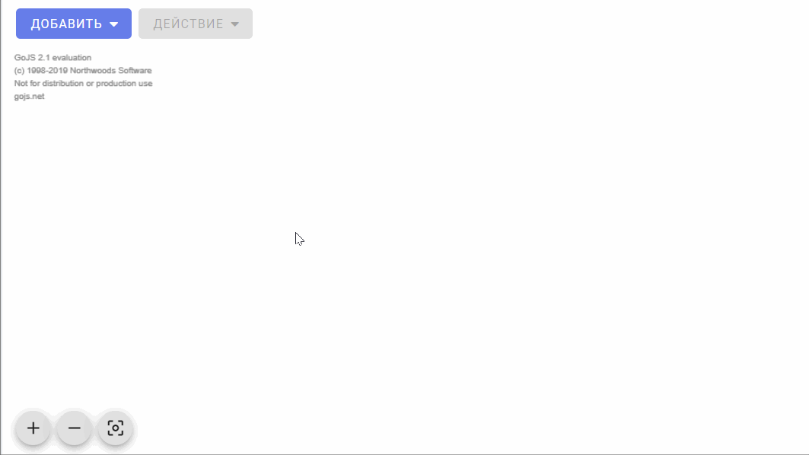
Элемент предназначен для добавления готовых решения в модель. При нажатии на элемент откроется форма выбора готового решения из галереи готовых решений. В форме необходимо выбрать готовое решения из списка, далее нажать на кнопку "Добавить". Для отмены операции необходимо нажать на кнопку "Отмена".
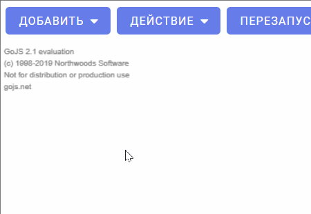
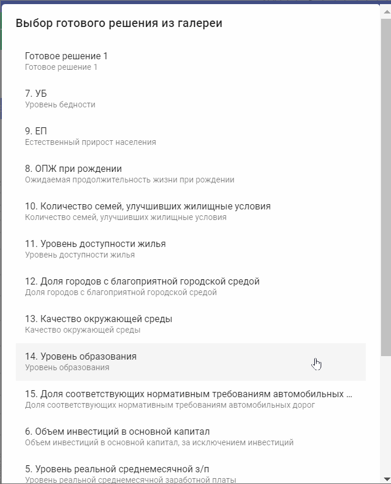
Элемент предназначен для создания новой связи между узлами. При нажатии на элемент откроется форма создания связи. В форме необходимо заполнить следующие поля: название исходящего узла, название входного узла, название спецификации. Далее необходимо нажать на кнопку "Добавить". Для отмены операции необходимо нажать на кнопку "Отмена".
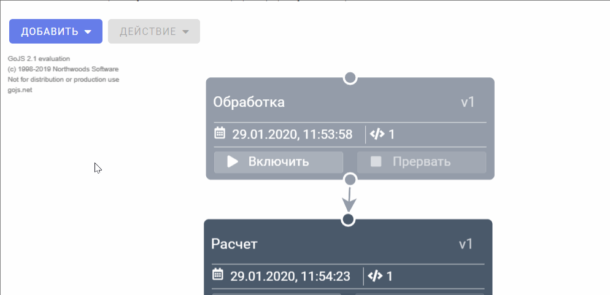
Элемент предназначен для создания новой спецификации. При нажатии на элемент откроется форма создания спецификации. В форме необходимо заполнить название спецификации. Далее необходимо нажать на кнопку "Создать". Для отмены операции необходимо нажать на кнопку "Отмена".
Меню становится доступным после выбора узла, связи либо нескольких узлов, связей.
Элементы меню, доступные при выборе узла:
Элемент предназначен для редактирования информации об узле. При нажатии на элемент откроется форма для редактирования выбранного узла. Измените нужные поля формы: название узла, описание узла. Далее необходимо нажать на кнопку "Изменить". Для отмены операции необходимо нажать на кнопку "Отмена".
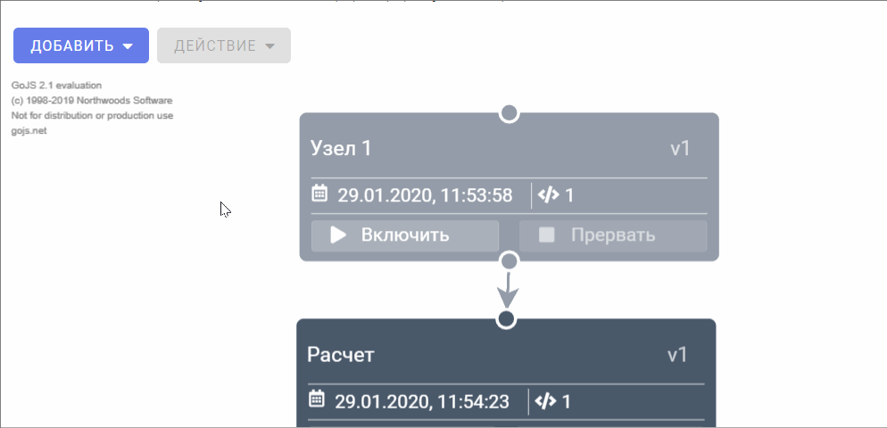
Элемент предназначен для добавления копии выбранного узла. При нажатии на элемент создастся копия узла.
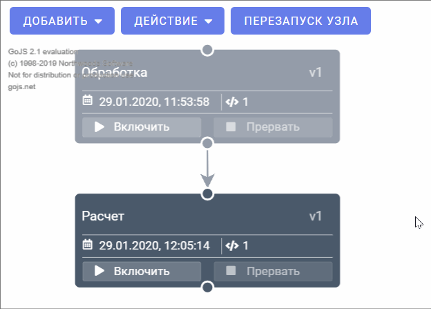
Элемент предназначен для удаления выбранного узла из модели. При нажатии на элемент откроется форма подтверждения удаления узла. Для подтверждения операции необходимо нажать на кнопку "Удалить". Для отмены операции необходимо нажать на кнопку "Отмена".
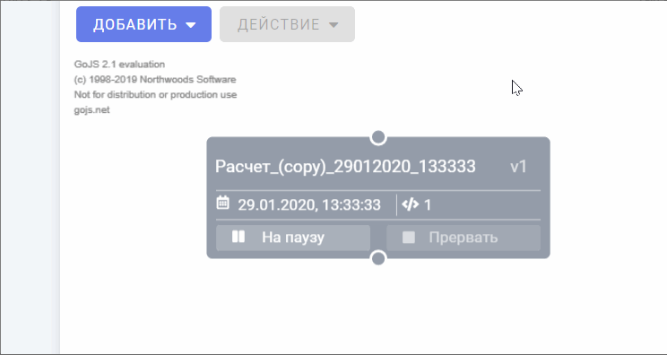
Элемент предназначен сохранения выбранных узлов и связей между ними в галерею готовых решений. При нажатии на элемент откроется форма сохранения готового решения. В форме необходимо заполнить следующие поля: название готового решения, описание готового решения. Далее необходимо нажать на кнопку "Создать". Для отмены операции необходимо нажать на кнопку "Отмена".
Примечание. Для выбора нескольких узлов и связей зажмите клавишу CTRL.
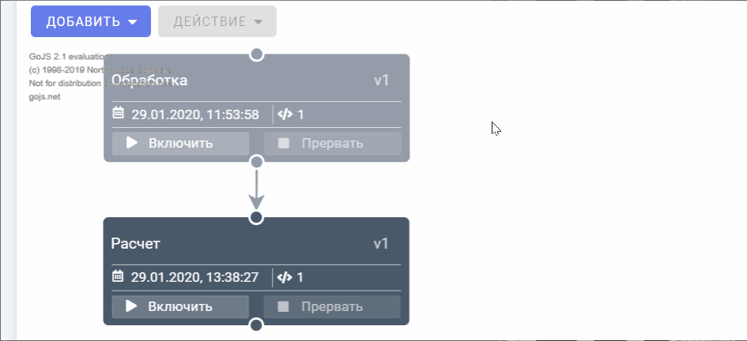
Элементы меню, доступные при выборе связи:
Элемент предназначен для удаления выбранного узла из модели. При нажатии на элемент откроется форма подтверждения удаления связи. Для подтверждения операции необходимо нажать на кнопку "Удалить". Для отмены операции необходимо нажать на кнопку "Отмена".
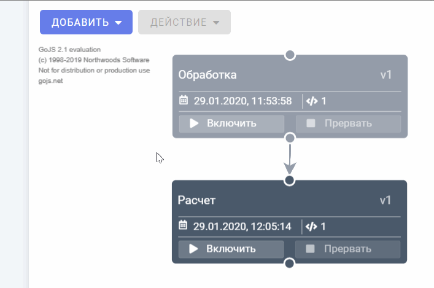
Кнопка становится доступной в случае, если ранее был выбран эпизод модели. Перезапуск узла требуется в том случае, если необходимо применить какие-либо произошедшие в узле изменения. Для перезапуска узла необходимо выбрать нужный узел, далее нажать на кнопку "Перезапуск узла".
Область отображения графа содержит все инстансы (экземпляры узла) модели.
Для того, чтобы уменьшить отображения графа в области, необходимо нажать на кнопку . Для того, чтобы увеличить отображения графа в области, необходимо нажать на кнопку .
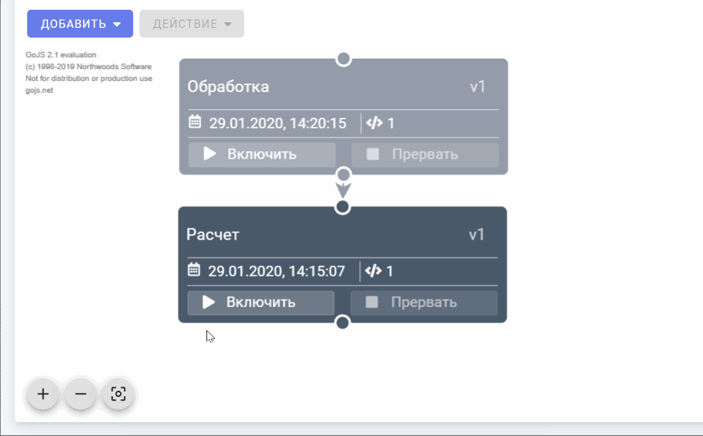
Для того, чтобы граф был расположен в центре области отображения и принял размеры, соответствующие размеру виджета, необходимо нажать на кнопку .
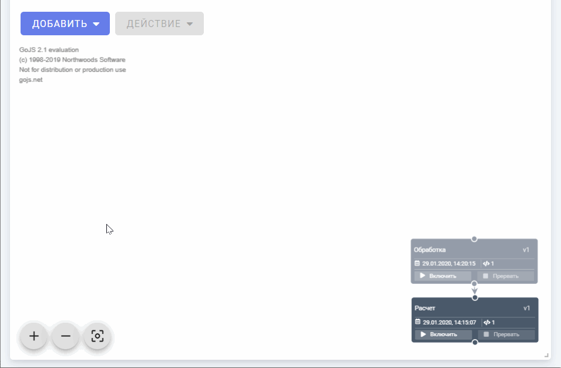
Для выбора нужного узла (узлов) и связи (связей) необходимо навести курсор и щелкнуть левой кнопкой мыши. Выбранный узел (либо связь) становятся активными и доступными для редактирования. Активный узел окрасится в белый цвет, активная связь окрасится в синий цвет. Для того, чтобы отменить выбор узла (связи), необходимо навести курсор на пустую область и щелкнуть по ней левой кнопкой мыши.
Работа с инстансом (экземпляром узла) становится доступной в случае, если ранее был выбран эпизод модели.
Экземпляры узла могут менять свои статусы.
Подготовка – узел в стадии настройки параметров (светло–серый цвет узла)
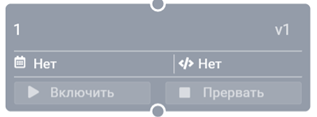
Ожидание – ожидание загрузки пакета данных для возможности запуска узла (темно–серый цвет узла)
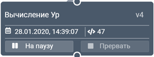
Готов (пауза) – пакет данных загружен, узел готов к запуску (желтый цвет узла)
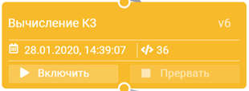
Работает – процесс вычислений в узле запущен (зеленый цвет узла)
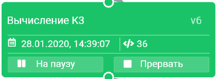
Отработал – процесс вычислений в узле успешно завершен (синий цвет узла)
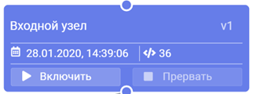
Ошибка – произошла ошибка в процессе вычислений узла (красный цвет узла)
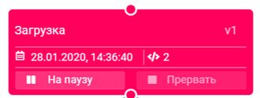
Прерван – при вычислений узла, был прерван пользователем был прерван расчёт (фиолетовый цвет узла)